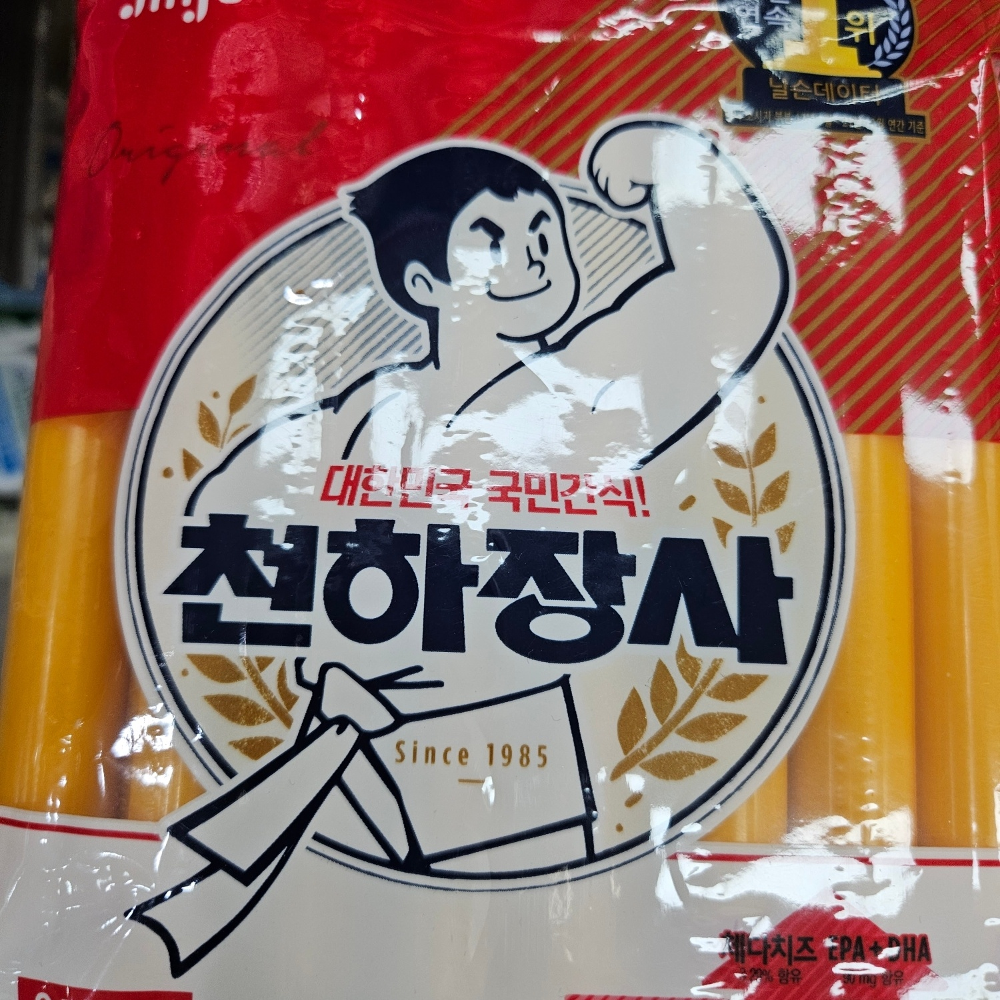
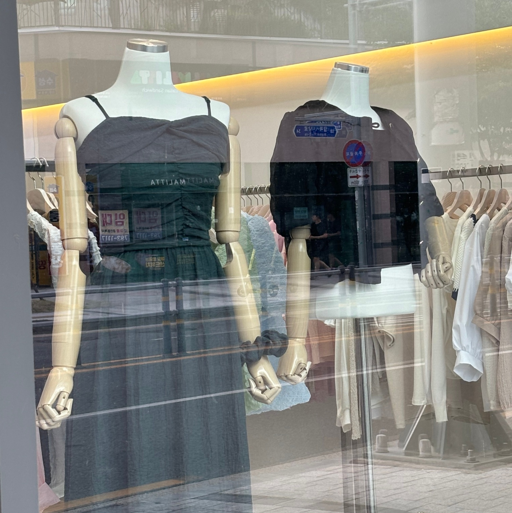

신체
사람들은 모두 다 다른 신체를 가지고 있다. 겉으로 보이는 신체로 인해서 여러 상황에 대한 신체적 고정관념이 있다. 위에 사진처럼 천하장사의 상품에 남자를 그리는 예가 있다. 힘이 세다는 조건에는 남성의 신체를 대부분 생각하거나 남성의 신체구조가 여성과는 다른 구조라는 이유이다. 또한, 백화점이나 옷 가게를 방문하면 볼 수 있는 마네킹은 대부분의 사람들이 추구하는 이상적인 신체를 가지고 있다. 얇고, 평균을 넘는 키를 가진 마네킹은 옷이 보여주는 핏을 극대화하는 효과를 준다. 하지만 모든 사람들이 이상적인 신체인 것은 아니다.마네킹은 다양한 신체로 제작해서 고정관념에 박히지 않고 많은 사람들이 더 나은 소비를 할 수 있도록 만들어져야 한다.
 